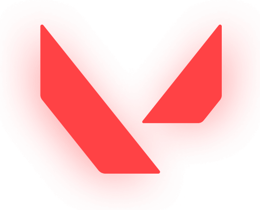

Valorant — новый проект компании Riot Games - создателей League of Legends и Legends of Runeterra. Это онлайн-шутер от первого лица, в котором игроки берут под управление одного из десяти персонажей с уникальными способностями и делятся на две команды по пять человек.